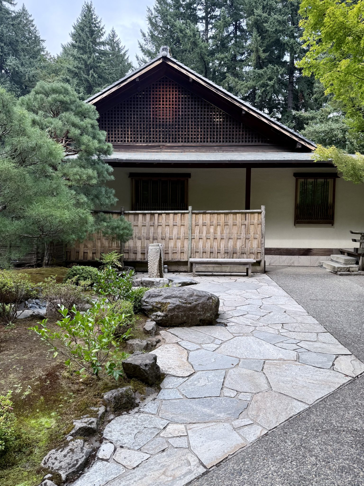
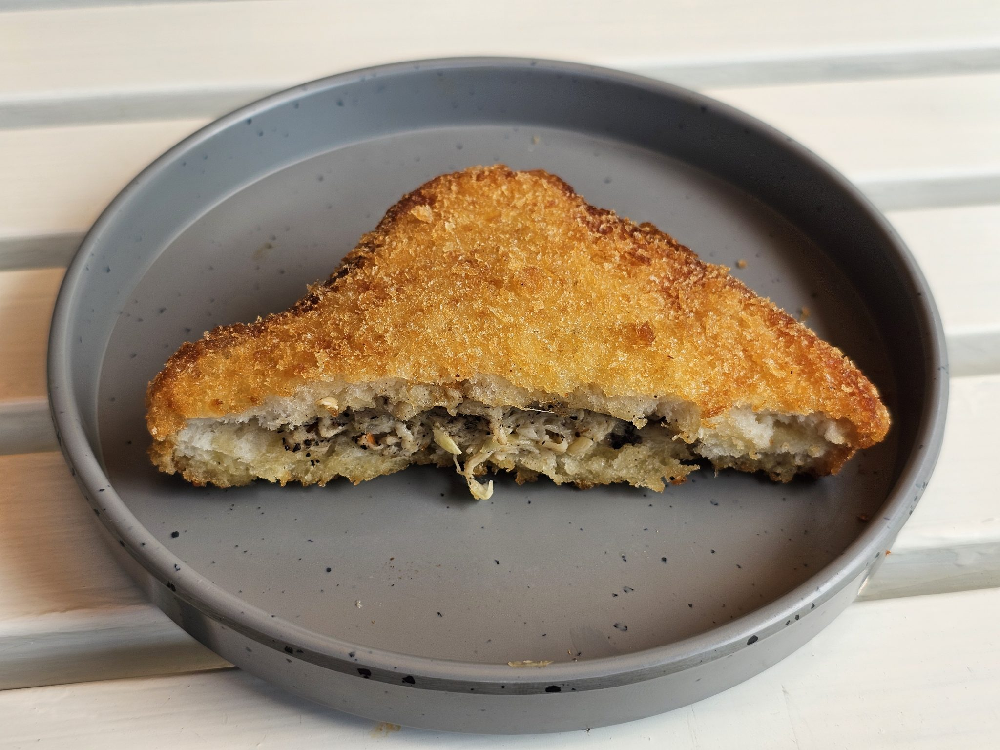

★★★★★ご来店のお客様(4か月前のご来店)
「美しいアンティークに囲まれたその店内は、小さな美術館の様でした。玄米入り米粉のカレーパンは自家農園野菜がたっぷりで、どのメニューも良心的な値段。店員さんはワンオペで大変そうでしたが、物腰柔らかく、素晴らしい接客でした」
営業日:金・土・日のみ / 営業時間:確認中(店頭にてご確認ください)

群馬県高崎市 ・ 古民家カフェ
金・土・日だけ、ゆっくり味わう時間。
群馬県高崎市、路地裏にひっそりと佇む古民家カフェ「千年木」。看板を大きく主張しない小さな入り口の先に、BGMのない静かな店内が広がります。玄米入り米粉のカレーパンをはじめ、体に優しい手づくりメニューを、店主がひとりで、丁寧にお出ししています。
掲載している写真はすべてイメージ素材です。実店舗の写真ではありません。出典・ライセンスはページ下部の「画像クレジット」をご確認ください。
「美しいアンティークに囲まれたその店内は、小さな美術館の様でした」 ― ご来店のお客様の声より
選ばれる理由
BGMのない店内に、アンティークがそっと並びます。「小さな美術館のよう」と評されるその空間は、一人でゆっくり本を読む時間にも向いています。
看板の『玄米入り米粉 千年木カレーパン』は、白神天然酵母と国産小麦パン粉を使い、米油で揚げたもの。中には自家農園野菜がたっぷり。上白糖は使用していません。
千年木はワンオペで営まれています。ご注文を受けてから揚げ物などを仕上げるため提供には少し時間がかかりますが、その分、丁寧な一皿が届きます。


看板メニュー
少し硬めの生地は、白神天然酵母と国産小麦パン粉を使い、米油で揚げたもの。中には自家農園野菜がたっぷりと詰まった、素材の味を生かした一品です。
メニューをもっと見る画像はイメージです。実店舗のカレーパンとは異なります。
玄関先の野菜販売
店主のお父様が育てた野菜や、高崎市産の野菜を、玄関先で販売しています。カフェのご利用がなくても、野菜や果物だけのお買い物も歓迎とのことです。
★★★★★ご来店のお客様(4か月前のご来店)
「美しいアンティークに囲まれたその店内は、小さな美術館の様でした。玄米入り米粉のカレーパンは自家農園野菜がたっぷりで、どのメニューも良心的な値段。店員さんはワンオペで大変そうでしたが、物腰柔らかく、素晴らしい接客でした」
★★★★★ご来店のお客様(1年前のご来店)
「金土日だけの路地裏隠れ家。玄関で高崎市産のお野菜が売られていて、メニューも体に優しい、店主拘りのものばかりでした」
路地裏にひっそりと佇むお店です。看板を大きく出していないため、Googleマップで経路を確認してからお越しください。
群馬県高崎市内の路地裏にお店はあります(詳細な番地は確認中です)。地図はGoogleマップでご確認ください。
Googleマップで経路を確認する